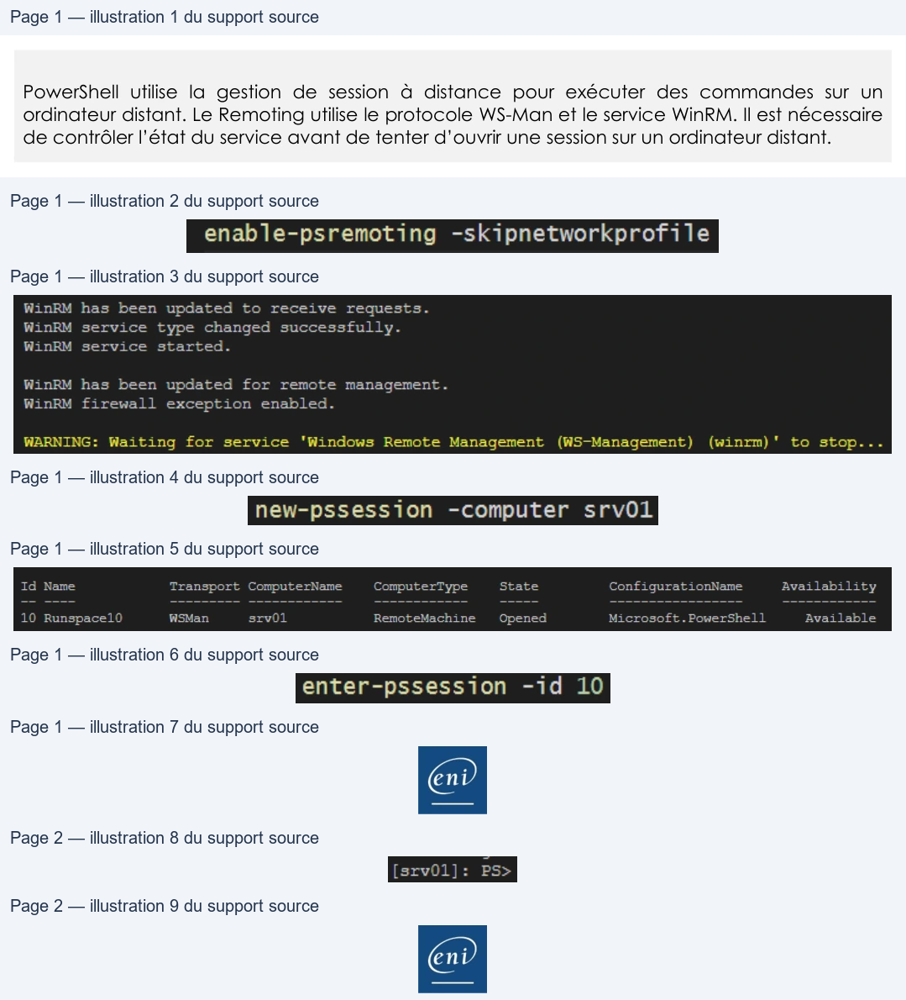

Transcription du document du Drive TSSR. La mise en forme est adaptée au Web ; les compléments IA du portail sont présentés séparément.
Initiation à PowerShell
Démonstration 08 du module 5
PowerShell utilise la gestion de session à distance pour exécuter des commandes sur un
ordinateur distant. Le Remoting utilise le protocole WS-Man et le service WinRM. Il est nécessaire
de contrôler l’état du service avant de tenter d’ouvrir une session sur un ordinateur distant.
• La première commande à utiliser est Enable-PsRemonting sur la machine à contrôler à distance.
• Il est nécessaire de rajouter le paramètre SkipNetworkCheck pour éviter des refus en cas de profil réseau de type public.
La commande configure le service WinRM. Elle ajoute également une exception dans le pare-feu
Windows puis redémarre le service WinRM.
Pour initier une session à distance, on utilise la commande New-Pssession avec en paramètre le nom ou l’adresse IP de la machine cible.
Nous avons désormais une session distante ouverte entre notre client et le serveur SRV01 ; cette
session possède un ID.
Pour exécuter des commandes avec cette session distante, on utilise la commande Enter- Pssession puis l’Id de la session souhaitée.
On indique l’Id de la session ouverte précédemment.
Page 1/2
© ENI – Tous droits réservés
enable-psremoting -skipnetworkprofile
WinRM has been updated
to
receive requests.
WinRM service type changed successfully.
WinRM
service
started.
WinRM has been updated
for remote management.
WinRM firewall exception enabled.
WARNING:
Waiting for service
‘Windows Remote Management
(WS-Management)
(winrm)'
to
stop...
new-pssession -computer srv01
Id Name
Transport ComputerName
ComputerType
State
ConfigurationName
Availability
10
Runspace10
WSMan
srv01
RemoteMachine
Opened
Microsoft .PowerShell
Available
enter-pssession -id 10
Initiation à PowerShell
Désormais le prompt indique le nom de la machine sur laquelle les commandes seront exécutées.
Il n’est pas possible de faire de saut avec le Remoting. Lorsque vous avez ouvert une session sur une
machine distante, il n’est pas possible d’ouvrir une session sur une autre machine à partir de cette
machine distante.
Toute session doit être ouverte à partir de la machine cliente d’origine.
Page 2/2
© ENI – Tous droits réservés
